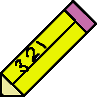

<nav class="navbar navbar-expand-lg navbar-custom">
    <div class="container-fluid">
      <a class="navbar-brand" routerLink="/">
        TaskManager</a>
      <button 
      class="navbar-toggler" 
      type="button" 
      data-bs-toggle="collapse" 
      data-bs-target="#navbarNav" 
      aria-controls="navbarNav" 
      aria-expanded="false" 
      aria-label="Toggle navigation">
        <span class="navbar-toggler-icon"></span>
      </button>
      <div class="collapse navbar-collapse" id="navbarNav">
        <ng-container *ngFor="let item of navMenu">
          <ul class="navbar-nav">
            <li class="nav-item">
              <a class="nav-link active" aria-current="page" [routerLink]="item.url">{{item.name}}</a>
            </li>      
          </ul>
        </ng-container>
      </div>
      <ul class="nav justify-content-end">
        <li class="nav-item">
          <a class="nav-link" routerLink="/register">Register</a>
        </li>
        <li class="nav-item">
          <a class="nav-link" routerLink="/signin">Login</a>
        </li>
      </ul>
    </div>
  </nav>
